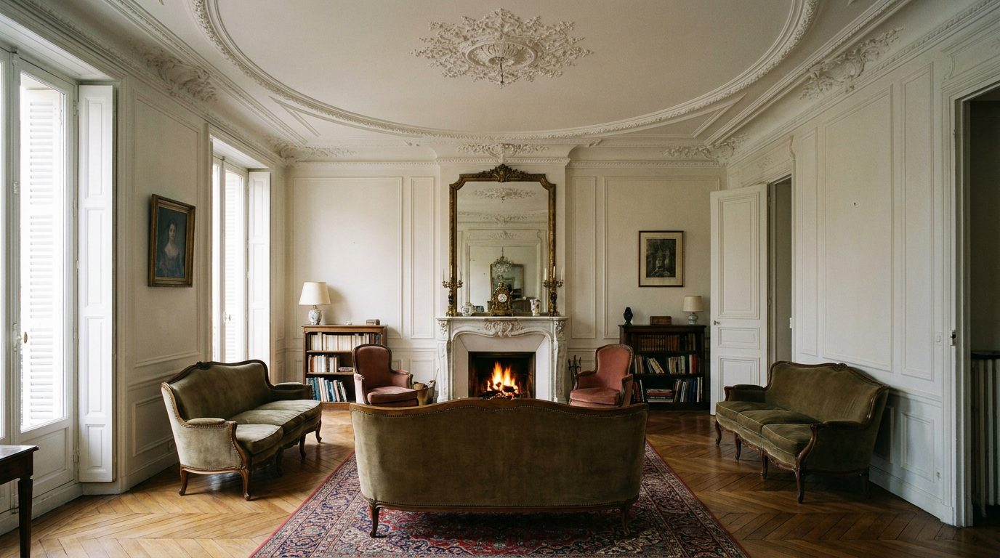

Atlante · FR-14 · Francia · Provincia
Appartamento borghese 1900 di provincia
Esempi · esterno e interno


Perché funziona
il "lusso discreto" fuori Parigi: soffitti alti, stucchi, verrière, piastrelle. Meno iconico dell'haussmaniano, più credibile come casa.
Architettura · elementi riproducibili
- Stucchi a cornice, rosette, medaglioni; HSP 3,2–3,8 m
- Verrière interna sopra il vano scala; ringhiera in ferro e legno
- Pavimento a spina o a lame larghe, piastrelle cementine in cucina
- Porte a pannelli con specchiera; camini in marmo chiaro
Luce
verrière che porta luce dall'alto sul vano scala + finestre laterali; 5200–5800 K; atmosfera calma, poca ombra dura.
Prompt di generazione (EN)
Bourgeois apartment interior in Bordeaux, 1900, 3.5 m ceiling with stucco cornice and ceiling medallion, sage green walls, herringbone oak floor, white marble fireplace, tall panelled doors, internal glass roof over the stairwell, brass wall lights, velvet bench. Soft mixed light from the glass roof above and a tall window at the side, 5400 K, gentle shadows. 35 mm lens, f/4, camera at 1.45 m, three-quarter view with the staircase edge in frame, no people, 4:5.
Errori tipici da controllaremescolanza con haussmaniano (boiserie + stucchi + marmi tutti insieme); verrière resa come lucernario industriale; colori pastello slavati.